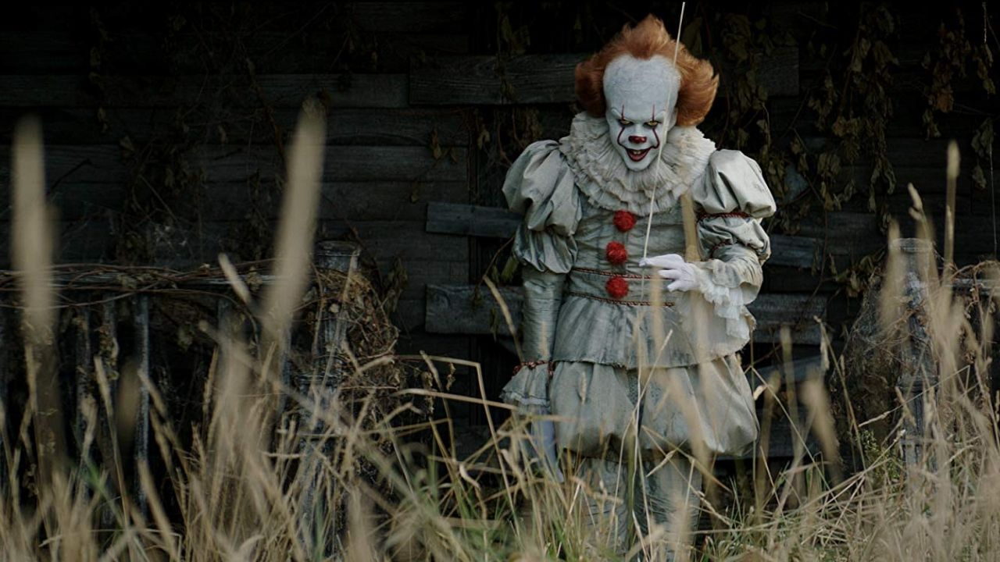
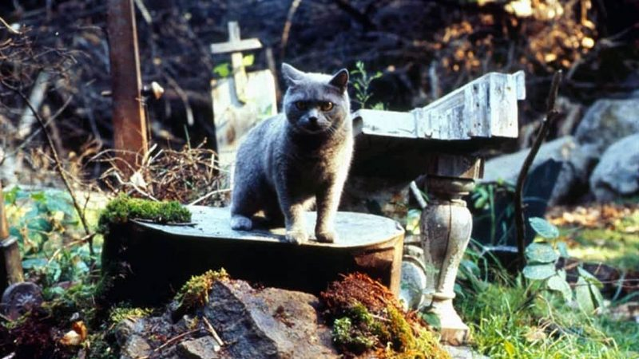
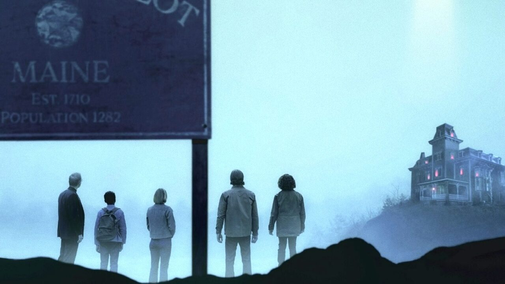
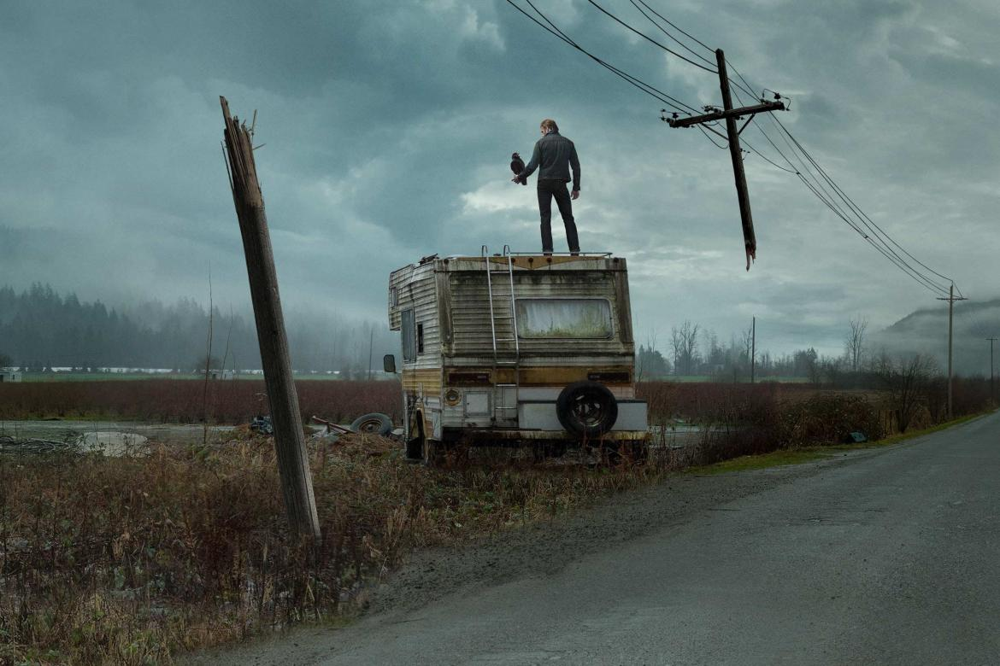
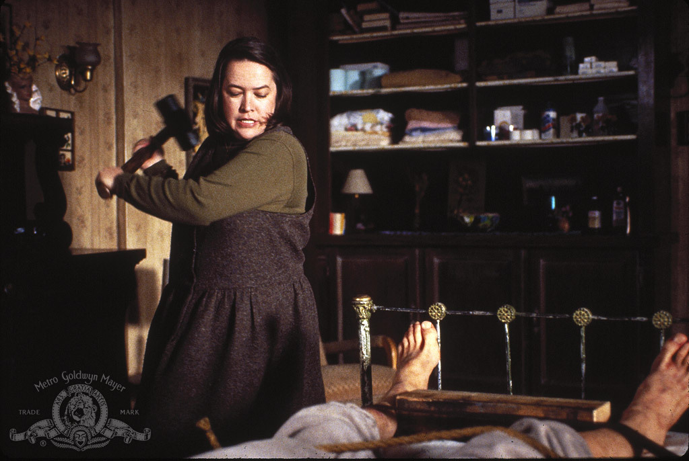
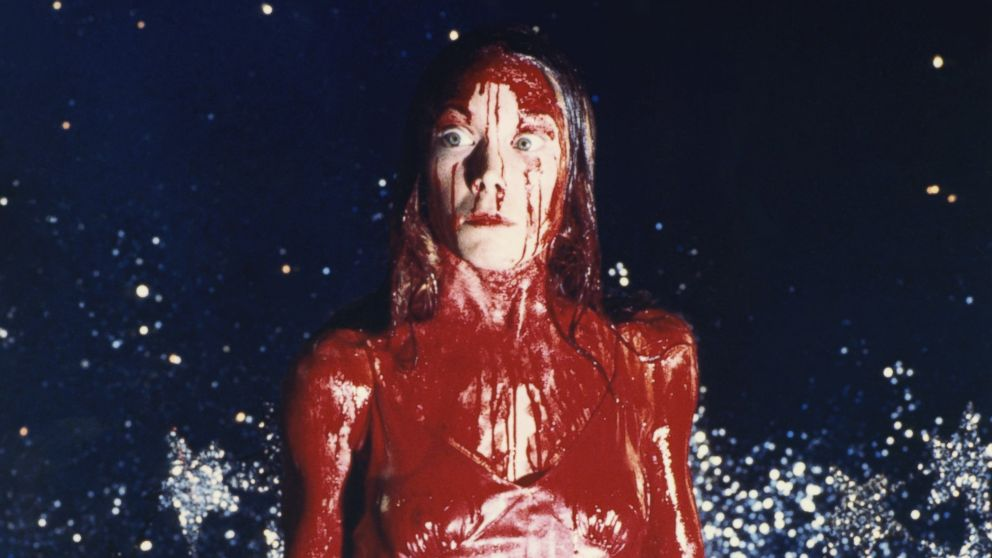
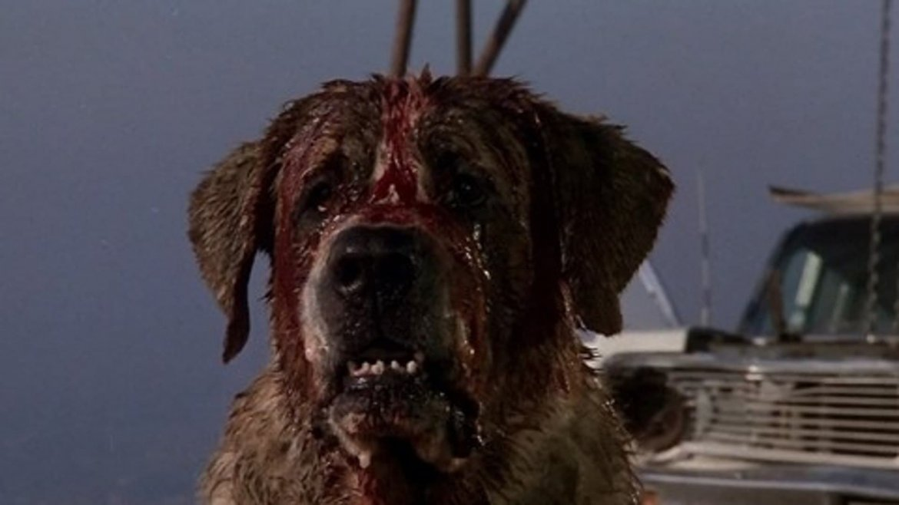
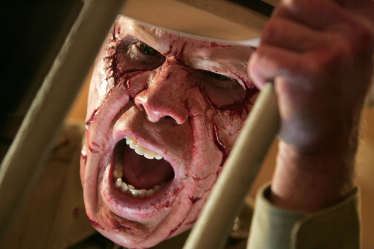
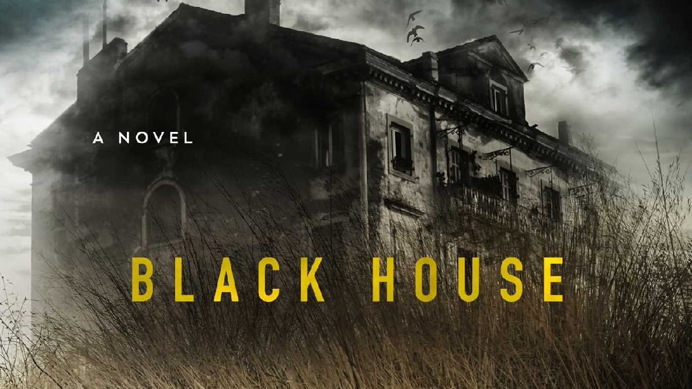

Dark Blog
O universo Dark de fã para fã
As 10 Histórias mais assustadoras de Stephen King
Com mais de 350 milhões de cópias vendidas, Stephen King é merecidamente considerado o rei do terror. Ao longo de quase cinquenta anos de carreira, o escritor já publicou 62 livros, incluindo sete sob o pseudônimo de Richard Bachman, além de doze coletâneas de contos e cinco livros de não ficção. Até mesmo quem não é muito adepto da leitura conhece as histórias de King em suas incontáveis adaptações para o cinema, como Carrie, a Estranha, O Iluminado, Louca Obsessão, It: A Coisa, Um Sonho de Liberdade e À Espera de um Milagre — entre tantas outras, é claro.
Nem sempre o terror é o foco de suas histórias, mas pitadas de suspense e algum aspecto sobrenatural são a marca registrada do King. Aliás, ele vem nos presenteando com variações bem ricas do que podemos considerar terror, às vezes com monstros sobrenaturais, às vezes com aspectos perigosos da natureza humana. Em homenagem à aterrorizante carreira do rei, a Caveira escolheu aquelas que considera as histórias mais assustadoras de Stephen King. Leia se tiver coragem:
1. A Coisa
Publicado em 1986, A Coisa é um dos romances mais populares e aterrorizantes já escritos por Stephen King. Na trama, um grupo de amigos descobre uma poderosa força sobrenatural que iria tomar a forma de um dos vilões mais temidos da ficção: o palhaço Pennywise. Alimentado por seus medos, o palhaço retorna de tempos em tempos cada vez mais forte. Quando adultos, os amigos retornam a Derry para derrotar a criatura.
Pennywise surgiu pela mesma época em que um palhaço bem real aterrorizou os Estados Unidos: John Wayne Gacy, cuja história de crimes é contada em Killer Clown Profile: Retrato de um Assassino. A história ganhou adaptações cinematográficas com Tim Curry no papel de Pennywise, e mais recentemente com Bill Skarsgård no papel. A HBO está trabalhando em uma série que se passa no universo de A Coisa.
2. O Iluminado
Talvez você tenha conhecido essa história primeiro no cinema, graças à famosa adaptação de Stanley Kubrick com Jack Nicholson — que Stephen King odeia. Mas independentemente das diferenças entre original e adaptação, O Iluminado permanece sendo um dos livros mais icônicos do autor.

A atmosfera inóspita do Hotel Overlook e a crescente espiral de loucura causada pelo isolamento — e outros problemas de Jack Torrance — continuam provocando angústia até os dias de hoje.
3. Cemitério Maldito
Muita gente considera essa aqui a história mais assustadora de Stephen King — inclusive o próprio autor. Isso porque King lida não apenas com o nosso medo de perder pessoas queridas, mas de um eventual retorno delas ao mundos dos vivos dar terrivelmente errado.
As vítimas escolhidas pelo escritor também causam comoção, começando por um amado gato de família e depois por uma criança inocente que tem sua vida interrompida de maneira violenta. Todo mundo sabe o que é perder alguém e a maioria daria qualquer coisa para ter seus entes queridos de volta. Só que Stephen King nos mostra que isso pode ter um preço alto demais e ter um resultado catastrófico. A história já foi adaptada duas vezes pro cinema e ganhou até música dos Ramones.
4. A Hora do Vampiro
Publicado originalmente em 1975, A Hora do Vampiro é uma das histórias mais assustadoras do autor, captando a mítica em torno dos vampiros, como já escancara o nome em português — o original é Salem’s Lot. Ambientada em Jerusalem’s Lot, a obra conta a história de um escritor que retorna à sua cidade natal e descobre que ela está sendo dominada por um poderoso vampiro.
Moradores e pessoas próximas ao protagonista começaram a desaparecer, mas logo retornam como servos do vampiro Kurt Barlow. O escritor encara a briga para salvar a cidade antes que seja tarde demais. Uma nova adaptação para as telonas está sendo ventilada há algum tempo e a gente segue na torcida para que ela saia do papel.
5.A Dança da Morte
Perturbadoramente atual, A Dança da Morte é um romance pós-apocalíptico sobre uma cepa do vírus Influenza que dizimou 99% da população mundial. Esse tijolão de aproximadamente mil páginas é considerado por muitos fãs a obra-prima de King, misturando diferentes gêneros literários e abordando diferentes temas relacionados a moralidade e sobrevivência.
O fato de que o autor conseguiu cunhar um conceito tão complexo e elaborado ao narrar sua história soa tão milagroso quanto a sobrevivência dos personagens do romance. O resultado é um épico macabro, que assusta ainda mais em tempos pós-pandêmicos do que quando foi publicado em 1978.
6. Misery
Misery é a prova definitiva de que Stephen King consegue nos apavorar sem recorrer a qualquer elemento sobrenatural. Aqui, o terror se encontra principalmente no controle — mais ou menos como todos nós operamos achando que estamos no controle de nossas vidas. Destrua essa ilusão e tudo o que resta será o terror.
Na história, Paul Sheldon é um escritor resgatado após sofrer um acidente de carro na neve em um local isolado. Para sua sorte (ou azar), quem o resgata é Annie Wilkes, grande fã de sua série de livros. O que era um cuidado protetivo se torna uma relação perigosa de controle por parte de Wilkes, que não está nada feliz com os rumos que Sheldon está dando à sua personagem preferida. Uma história brilhantemente adaptada para as telonas no filme Louca Obsessão, que rendeu o Oscar® a Kathy Bates.
7. Carrie, A Estranha
O romance de estreia de Stephen King já deixou bem claro o terror que ele pretendia causar. Carrie conta a história de uma adolescente tímida que se vê passando por mudanças assustadoras na puberdade — principalmente porque sua mãe terrivelmente religiosa não havia lhe dado qualquer tipo de aviso sobre elas e porque sua menstruação decidiu vir justamente na frente das colegas de escola.
Carrie só queria ser uma garota normal, só que logo ela começa a descobrir poderosas habilidades telecinéticas. Sua fúria intensa — provocada pelo bullying e pelo abuso da mãe — recai sobre a cidade em um dos clímax mais emblemáticos de toda a carreira de Stephen King.
8. Cujo
Apesar de ser considerado um tanto desleixado por alguns leitores, Cujo não deixa de ser um livro super eficiente na sua missão de causar terror. O romance se concentra em suas famílias: os Trentons e os Cambers. Conforme os Cambers se preparam para deixar a cidade, seu cão São Bernardo chamado Cujo contrai raiva e se torna assassino.
A história pode até não alcançar a profundidade filosófica ou sobrenatural tão comum às histórias de King, mas Cujo é uma obra ousada, visceral e que possui uma narrativa envolvente — e assustadora. Além, é claro, de ser um ótimo lembrete para manter as vacinas dos seus pets em dia.
9. Desespero
Essa obra única na bibliografia de King foi lançada como um romance duplo: ela é acompanhada por Os Justiceiros, publicado pelo pseudônimo de King, Richard Bachman. Estamos falando de uma história assombrosa sobre uma entidade poderosa que vive entre mundos.
Desespero se passa em uma cidade controlada por um ser maligno chamado Tak. A entidade possuiu o xerife local e começou a atormentar a cidade. Fazendo uso do corpo do xerife, Tak começa a sequestrar e torturar motoristas que passam pelo local. Tak é um personagem assustador em ambos os livros e tem tudo para causar os piores pesadelos nos leitores.
10. A Casa Negra
Um romance relativamente recente, publicado em 2001, A Casa Negra é a prova de que o King não perdeu o seu borogodó com o tempo. Escrita em parceria com Peter Straub, autor de Ghost Story, essa é uma de suas obras mais aterrorizantes. Trata-se de uma sequência de O Talismã, de 1984, mergulhando mais fundo nos horrores da história. Ambos os livros também possuem ligações com a série A Torre Negra. Neste livro, Jack Sawyer, de O Talismã, retorna como um detetive de polícia que foi chamado para solucionar o caso de um cruel assassino em série. Ele descobre memórias secretas de seu passado em um mundo alternativo que explora a fundo um universo completamente novo. Tudo isso com um terror que apenas a união de King e Straub poderia proporcionar.
E você tem alguma história de Stephen King que acha mais assustadora do que essas? Entre em contato conosco, e conte para a gente.